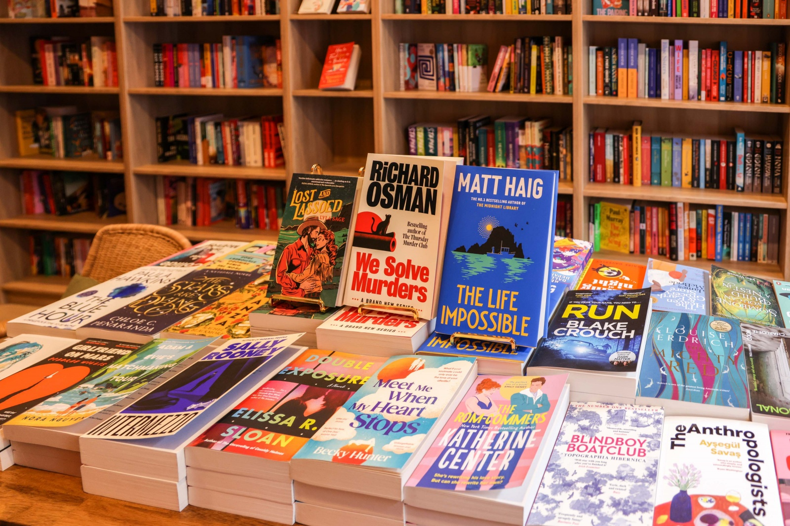
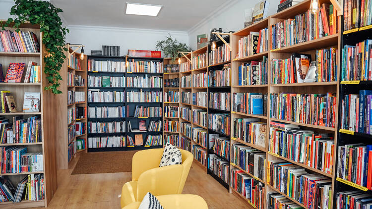

O Santuário das Palavras
Nas nossas estantes altos de madeira, os livros não são apenas mercadoria; são histórias que aguardam o leitor certo num ambiente onde o tempo avança mais devagar.
Uma Curadoria Feita à Mão
Afastamo-nos das correntes comerciais de produção em massa para nos focarmos numa escolha rigorosa de autores clássicos, literatura contemporânea independente e edições cuidadas que merecem um lugar de destaque na sua biblioteca pessoal.
A nossa mesa central oferece uma seleção rotativa de obras marcantes, onde cada capa convida ao toque e cada contracapa propõe uma nova viagem literária.


Espaços de Silêncio e Pausa
Desenhámos o interior da livraria para ser uma extensão da sua própria sala de estar. Entre estantes repletas de conhecimento e apontamentos de vegetação natural, criámos recantos de leitura confortáveis, equipados com poltronas que convidam a abrir um capítulo e a esquecer a pressa do mundo exterior.
A Tradição das Grandes Bibliotecas
A nossa arquitetura interna homenageia as livrarias antigas, onde o teto alto obriga ao uso do escadote de madeira tradicional para alcançar as relíquias mais altas.
Promovemos o contacto físico com a literatura: pegue, folheie, sinta a textura do papel e deixe que o acaso o guie até à próxima grande leitura.
Onde o Papel Encontra a Pétala
Acreditamos que a beleza da escrita se intensifica quando rodeada pela fragrância da natureza. Cada canto da nossa livraria é um testemunho desta harmonia intemporal.